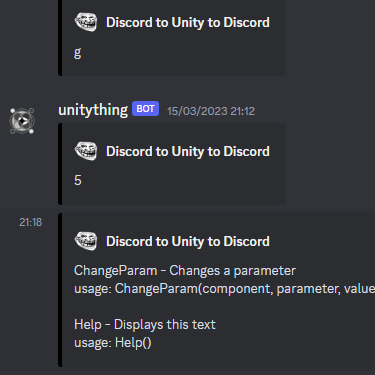
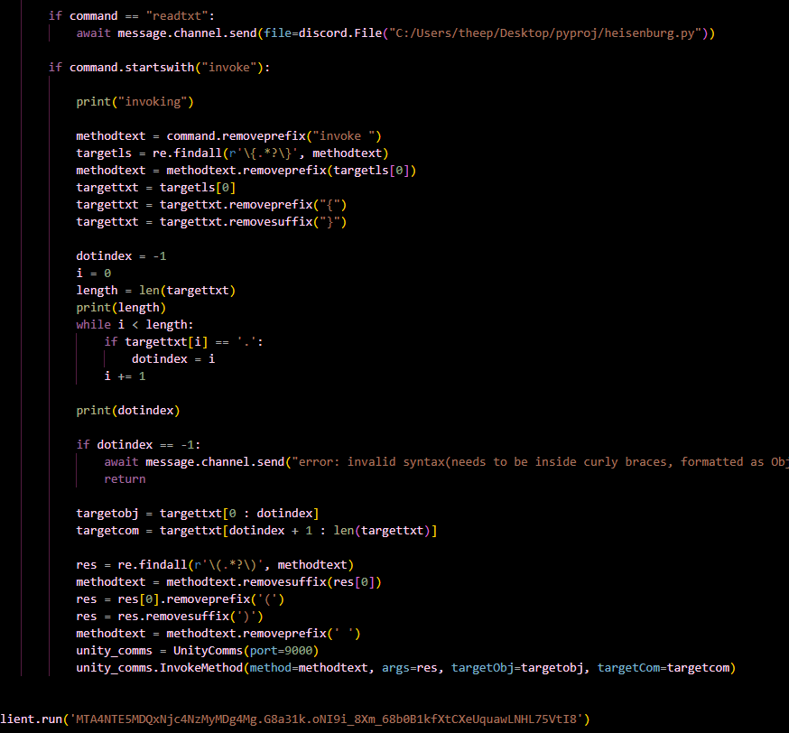

discord to unity interface
summary
Never gave this project a name, but it was essentially an experiment in making a game that could be run from discord that eventually evolved into a debugging console for unity.

how it worked
- a discord bot running on my pc (which was nicknamed heisenburg) would scan a specific discord channel for a message starting with its name and "invoke"
- if heisenburg found such a message, it would then follow certain criteria to read parameters from the message (and send back errors if the format was invalid)
- the resulting text would be forwarded via a unity-pyhon interface in which the unity application also running on my pc would listen for text on a specific port that heisenburg could send to
- unity would read that text and try to match it to an object, component, and function based on the parameters it read from heisenburg(and report any errors in the process)
- if all went according to plan(which it did eventually) the target function would run and a webhook from unity would send back a message like "success" or "did [thing]".